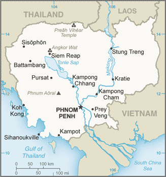
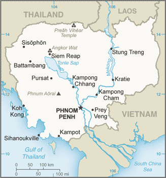

East & Southeast Asia :: CAMBODIA
Introduction :: CAMBODIA
-
Most Cambodians consider themselves to be Khmers, descendants of the Angkor Empire that extended over much of Southeast Asia and reached its zenith between the 10th and 13th centuries. Attacks by the Thai and Cham (from present-day Vietnam) weakened the empire, ushering in a long period of decline. The king placed the country under French protection in 1863, and it became part of French Indochina in 1887. Following Japanese occupation in World War II, Cambodia gained full independence from France in 1953. In April 1975, after a seven-year struggle, communist Khmer Rouge forces captured Phnom Penh and evacuated all cities and towns. At least 1.5 million Cambodians died from execution, forced hardships, or starvation during the Khmer Rouge regime under POL POT. A December 1978 Vietnamese invasion drove the Khmer Rouge into the countryside, began a 10-year Vietnamese occupation, and touched off almost 13 years of civil war.The 1991 Paris Peace Accords mandated democratic elections and a cease-fire, which was not fully respected by the Khmer Rouge. UN-sponsored elections in 1993 helped restore some semblance of normalcy under a coalition government. Factional fighting in 1997 ended the first coalition government, but a second round of national elections in 1998 led to the formation of another coalition government and renewed political stability. The remaining elements of the Khmer Rouge surrendered in early 1999. Some of the surviving Khmer Rouge leaders have been tried or are awaiting trial for crimes against humanity by a hybrid UN-Cambodian tribunal supported by international assistance. Elections in July 2003 were relatively peaceful, but it took one year of negotiations between contending political parties before a coalition government was formed. In October 2004, King Norodom SIHANOUK abdicated the throne and his son, Prince Norodom SIHAMONI, was selected to succeed him. The most recent local (Commune Council) elections were held in Cambodia in 2012, with little of the preelection violence that preceded prior elections. National elections in July 2013 were disputed, with the opposition - the Cambodian National Rescue Party (CNRP) - boycotting the National Assembly. The political impasse was ended nearly a year later, with the CNRP agreeing to enter parliament in exchange for ruling party commitments to electoral and legislative reforms.
Geography :: CAMBODIA
-
Southeastern Asia, bordering the Gulf of Thailand, between Thailand, Vietnam, and Laos13 00 N, 105 00 ESoutheast Asiatotal: 181,035 sq kmland: 176,515 sq kmwater: 4,520 sq kmcountry comparison to the world: 91one and a half times the size of Pennsylvania; slightly smaller than Oklahomatotal: 2,530 kmborder countries (3): Laos 555 km, Thailand 817 km, Vietnam 1,158 km443 kmterritorial sea: 12 nmcontiguous zone: 24 nmexclusive economic zone: 200 nmcontinental shelf: 200 nmtropical; rainy, monsoon season (May to November); dry season (December to April); little seasonal temperature variationmostly low, flat plains; mountains in southwest and northmean elevation: 126 melevation extremes: lowest point: Gulf of Thailand 0 mhighest point: Phnum Aoral 1,810 moil and gas, timber, gemstones, iron ore, manganese, phosphates, hydropower potential, arable landagricultural land: 32.1%arable land 22.7%; permanent crops 0.9%; permanent pasture 8.5%forest: 56.5%other: 11.4% (2011 est.)3,540 sq km (2012)population concentrated in the southeast, particularly in and around the capital of Phnom Penh; further distribution is linked closely to the Tonle Sap and Mekong Riversmonsoonal rains (June to November); flooding; occasional droughtsillegal logging activities throughout the country and strip mining for gems in the western region along the border with Thailand have resulted in habitat loss and declining biodiversity (in particular, destruction of mangrove swamps threatens natural fisheries); soil erosion; in rural areas, most of the population does not have access to potable water; declining fish stocks because of illegal fishing and overfishingparty to: Biodiversity, Climate Change, Climate Change-Kyoto Protocol, Desertification, Endangered Species, Hazardous Wastes, Marine Life Conservation, Ozone Layer Protection, Ship Pollution, Tropical Timber 94, Wetlands, Whalingsigned, but not ratified: Law of the Seaa land of paddies and forests dominated by the Mekong River and Tonle Sap (Southeast Asia's largest freshwater lake)
People and Society :: CAMBODIA
-
16,204,486note: estimates for this country take into account the effects of excess mortality due to AIDS; this can result in lower life expectancy, higher infant mortality, higher death rates, lower population growth rates, and changes in the distribution of population by age and sex than would otherwise be expected (July 2017 est.)country comparison to the world: 68noun: Cambodian(s)adjective: CambodianKhmer 97.6%, Cham 1.2%, Chinese 0.1%, Vietnamese 0.1%, other 0.9% (2013 est.)Khmer (official) 96.3%, other 3.7% (2008 est.)Buddhist (official) 96.9%, Muslim 1.9%, Christian 0.4%, other 0.8% (2008 est.)0-14 years: 31.01% (male 2,537,753/female 2,487,633)15-24 years: 18.36% (male 1,471,965/female 1,503,977)25-54 years: 40.68% (male 3,229,901/female 3,361,475)55-64 years: 5.69% (male 374,663/female 547,971)65 years and over: 4.25% (male 258,584/female 430,564) (2017 est.)total dependency ratio: 55.6youth dependency ratio: 49.2elderly dependency ratio: 6.4potential support ratio: 15.6 (2015 est.)total: 25.3 yearsmale: 24.6 yearsfemale: 26 years (2017 est.)country comparison to the world: 1561.52% (2017 est.)country comparison to the world: 7923 births/1,000 population (2017 est.)country comparison to the world: 677.5 deaths/1,000 population (2017 est.)country comparison to the world: 109-0.3 migrant(s)/1,000 population (2017 est.)country comparison to the world: 116population concentrated in the southeast, particularly in and around the capital of Phnom Penh; further distribution is linked closely to the Tonle Sap and Mekong Riversurban population: 21.2% of total population (2017)rate of urbanization: 2.73% annual rate of change (2015-20 est.)PHNOM PENH (capital) 1.731 million (2015)at birth: 1.05 male(s)/female0-14 years: 1.02 male(s)/female15-24 years: 0.98 male(s)/female25-54 years: 0.96 male(s)/female55-64 years: 0.65 male(s)/female65 years and over: 0.6 male(s)/femaletotal population: 0.94 male(s)/female (2016 est.)22.9 yearsnote: median age at first birth among women 25-29 (2014 est.)161 deaths/100,000 live births (2015 est.)country comparison to the world: 57total: 47.4 deaths/1,000 live birthsmale: 53.8 deaths/1,000 live birthsfemale: 40.7 deaths/1,000 live births (2017 est.)country comparison to the world: 35total population: 64.9 yearsmale: 62.4 yearsfemale: 67.5 years (2017 est.)country comparison to the world: 1812.52 children born/woman (2017 est.)country comparison to the world: 7856.3% (2014)5.7% of GDP (2014)country comparison to the world: 1150.17 physicians/1,000 population (2013)0.7 beds/1,000 population (2011)improved:urban: 100% of populationrural: 69.1% of populationtotal: 75.5% of populationunimproved:urban: 0% of populationrural: 30.9% of populationtotal: 24.5% of population (2015 est.)improved:urban: 88.1% of populationrural: 30.5% of populationtotal: 42.4% of populationunimproved:urban: 11.9% of populationrural: 69.5% of populationtotal: 57.6% of population (2015 est.)0.6% (2016 est.)country comparison to the world: 5471,000 (2016 est.)country comparison to the world: 471,800 (2016 est.)country comparison to the world: 54degree of risk: very highfood or waterborne diseases: bacterial diarrhea, hepatitis A, and typhoid fevervectorborne diseases: dengue fever, Japanese encephalitis, and malaria (2016)3.9% (2016)country comparison to the world: 18823.9% (2014)country comparison to the world: 181.9% of GDP (2014)country comparison to the world: 152definition: age 15 and over can read and writetotal population: 77.2%male: 84.5%female: 70.5% (2015 est.)total: 11 yearsmale: 11 yearsfemale: 10 years (2008)total: 0.5%male: 0.7%female: 0.4%note: according to official statistics (2010 est.)country comparison to the world: 130
Government :: CAMBODIA
-
conventional long form: Kingdom of Cambodiaconventional short form: Cambodialocal long form: Preahreacheanachakr Kampuchea (phonetic transliteration)local short form: Kampucheaformer: Khmer Republic, Democratic Kampuchea, People's Republic of Kampuchea, State of Cambodiaetymology: the English name Cambodia is an anglicization of the French Cambodge, which is the French transliteration of the native name Kampucheaparliamentary constitutional monarchyname: Phnom Penhgeographic coordinates: 11 33 N, 104 55 Etime difference: UTC+7 (12 hours ahead of Washington, DC, during Standard Time)24 provinces (khett, singular and plural) and 1 municipality (krong, singular and plural)provinces: Banteay Meanchey, Battambang, Kampong Cham, Kampong Chhnang, Kampong Speu, Kampong Thom, Kampot, Kandal, Kep, Koh Kong, Kratie, Mondolkiri, Oddar Meanchey, Pailin, Preah Vihear, Prey Veng, Pursat, Ratanakiri, Siem Reap, Sihanoukville, Stung Treng, Svay Rieng, Takeo, Tbong Khmummunicipalities: Phnom Penh (Phnum Penh)9 November 1953 (from France)Independence Day, 9 November (1953)previous 1947; latest promulgated 21 September 1993; amended 1999, 2008, 2014 (2016)civil law system (influenced by the UN Transitional Authority in Cambodia) customary law, Communist legal theory, and common lawaccepts compulsory ICJ jurisdiction with reservations; accepts ICCt jurisdictioncitizenship by birth: nocitizenship by descent only: at least one parent must be a citizen of Cambodiadual citizenship recognized: yesresidency requirement for naturalization: 7 years18 years of age; universalchief of state: King Norodom SIHAMONI (since 29 October 2004)head of government: Prime Minister HUN SEN (since 14 January 1985); Permanent Deputy Prime Minister MEN SAM AN (since 25 September 2008); Deputy Prime Ministers SAR KHENG (since 3 February 1992), TEA BANH, Gen., HOR NAMHONG, NHEK BUNCHHAY (all since 16 July 2004), BIN CHHIN (since 5 September 2007), KEAT CHHON, YIM CHHAI LY (since 24 September 2008), KE KIMYAN (since 12 March 2009)cabinet: Council of Ministers named by the prime minister and appointed by the monarchelections/appointments: monarch chosen by the 9-member Royal Council of the Throne from among all eligible males of royal descent; following legislative elections, a member of the majority party or majority coalition named prime minister by the Chairman of the National Assembly and appointed by the monarchdescription: bicameral Parliament of Cambodia consists of the Senate (61 seats; 57 indirectly elected by parliamentarians and commune councils, 2 indirectly elected by the National Assembly, and 2 appointed by the monarch; members serve 6-year terms) and the National Assembly (123 seats; members directly elected in multi-seat constituencies by proportional representation vote; members serve 5-year terms)note: two seats will be added to the National Assembly in 2018, for a total of 125elections: Senate - last held on 4 February 2012 (next to be held in 2018); National Assembly - last held on 28 July 2013 (next to be held in July 2018)election results: Senate - percent of vote by party - CPP 77.8%, SRP 22.2%; seats by party - CPP 46, SRP 11; National Assembly - percent of vote by party - CPP 48.8%, CNRP 44.5%, other 6.7%; seats by party - CPP 68, CNRP 55highest court(s): Supreme Council (organized into 5- and 9-judge panels and includes a court chief and deputy chief); Constitutional Court (consists of 9 members); note - in 1997, the Cambodian Government requested UN assistance in establishing trials to prosecute former Khmer Rouge senior leaders for crimes against humanity committed during the 1975-1979 Khmer Rouge regime; the Extraordinary Chambers of the Courts in Cambodia (also called the Khmer Rouge Tribunal) were established and began hearings for the first case in 2009; court proceeding were ongoing in 2016judge selection and term of office: Supreme Court and Constitutional Council judge candidates recommended by the Supreme Council of Magistracy, a 17-member body chaired by the monarch and includes other high-level judicial officers; judges of both courts appointed by the monarch; Supreme Court judges appointed for life; Constitutional Council judges appointed for 9-year terms with one-third of the court renewed every 3 yearssubordinate courts: Appellate Court; provincial and municipal courts; Military CourtCambodian National Rescue Party or CNRP [KHEM SOKHA] (dissolved by the government in November 2017; formed from a 2012 merger of the Sam Rangsi Party or SRP and the former Human Rights Party or HRP [KHEM SOKHA, also spelled KEM SOKHA])Cambodian People's Party or CPP [HUN SEN]Partnership for Transparency Fund or PTF [John CLARK] (anti-corruption organization)Students Movement for DemocracyThe Committee for Free and Fair Elections or Comfrel [Koul PANHA]other: human rights organizations; labor unions; youth groupsADB, ARF, ASEAN, CICA, CICA (observer), EAS, FAO, G-77, IAEA, IBRD, ICAO, ICRM, IDA, IFAD, IFC, IFRCS, ILO, IMF, IMO, Interpol, IOC, IOM, IPU, ISO (correspondent), ITU, MINUSMA, MIGA, NAM, OIF, OPCW, PCA, UN, UNAMID, UNCTAD, UNESCO, UNIDO, UNIFIL, UNISFA, UNMISS, UNWTO, UPU, WCO, WFTU (NGOs), WHO, WIPO, WMO, WTOchief of mission: Ambassador CHUM BUN RONG (since 3 August 2015)chancery: 4530 16th Street NW, Washington, DC 20011telephone: [1] (202) 726-7742FAX: [1] (202) 726-8381chief of mission: Ambassador William A. HEIDT (since 2 December 2015)embassy:mailing address: Unit 8166, Box P, APO AP 96546telephone: [855] (23) 728-000FAX: [855] (23) 728-600three horizontal bands of blue (top), red (double width), and blue with a white, three-towered temple representing Angkor Wat outlined in black in the center of the red band; red and blue are traditional Cambodian colorsnote: only national flag to incorporate an actual building into its designAngkor Wat temple, kouprey (wild ox); national colors: red, bluename: "Nokoreach" (Royal Kingdom)lyrics/music: CHUON NAT/F. PERRUCHOT and J. JEKYLLnote: adopted 1941, restored 1993; the anthem, based on a Cambodian folk tune, was restored after the defeat of the Communist regime
Economy :: CAMBODIA
-
Cambodia has experienced strong economic growth over the last decade; GDP grew at an average annual rate of over 8% between 2000 and 2010 and at least 7% since 2011. The tourism, garment, construction and real estate, and agriculture sectors accounted for the bulk of growth. Around 600,000 people, the majority of whom are women, are employed in the garment and footwear sector. An additional 500,000 Cambodians are employed in the tourism sector, and a further 50,000 people in construction. Tourism has continued to grow rapidly with foreign arrivals exceeding 2 million per year since 2007 and reaching around 4.5 million visitors in 2014. Mining also is attracting some investor interest and the government has touted opportunities for mining bauxite, gold, iron and gems.Cambodia remains one of the poorest countries in Asia and long-term economic development remains a daunting challenge, inhibited by endemic corruption, limited human resources, high income inequality, and poor job prospects. As of 2012, approximately 2.66 million people live on less than $1.20 per day, and 37% of Cambodian children under the age of 5 suffer from chronic malnutrition. More than 50% of the population is less than 25 years old. The population lacks education and productive skills, particularly in the impoverished countryside, which also lacks basic infrastructure.The World Bank in 2016 formally reclassified Cambodia as a lower middle-income country as a result of continued rapid economic growth over the past several years. Cambodia’s graduation from a low-income country will reduce its eligibility for foreign assistance and will challenge the government to seek new sources of financing in 2017. The Cambodian Government has been working with bilateral and multilateral donors, including the Asian Development Bank, the World Bank and IMF, to address the country's many pressing needs; more than 30% of the government budget comes from donor assistance. A major economic challenge for Cambodia over the next decade will be fashioning an economic environment in which the private sector can create enough jobs to handle Cambodia's demographic imbalance.$59.02 billion (2016 est.)$54.44 billion (2015 est.)$50.24 billion (2014 est.)note: data are in 2016 dollarscountry comparison to the world: 106$20.16 billion (2016 est.)7% (2016 est.)7.2% (2015 est.)7.1% (2014 est.)country comparison to the world: 8$3,700 (2016 est.)$3,500 (2015 est.)$3,400 (2014 est.)note: data are in 2016 dollarscountry comparison to the world: 18014.1% of GDP (2016 est.)13.1% of GDP (2015 est.)13.4% of GDP (2014 est.)country comparison to the world: 139household consumption: 76.1%government consumption: 5.2%investment in fixed capital: 21.7%investment in inventories: 1.4%exports of goods and services: 61.3%imports of goods and services: -65.7% (2016 est.)agriculture: 26.7%industry: 31.7%services: 41.6% (2016 est.)rice, rubber, corn, vegetables, cashews, cassava (manioc, tapioca), silktourism, garments, construction, rice milling, fishing, wood and wood products, rubber, cement, gem mining, textiles10.5% (2016 est.)country comparison to the world: 107.777 million (2016 est.)country comparison to the world: 64agriculture: 48.7%industry: 19.9%services: 31.5% (2013 est.)0.3% (2013 est.)0.2% (2012 est.)note: according to official statistics; underemployment is highcountry comparison to the world: 217.7% (2012 est.)lowest 10%: 2%highest 10%: 28% (2013 est.)37.9 (2008 est.)41.9 (2004 est.)country comparison to the world: 72revenues: $3.912 billionexpenditures: $4.088 billion (2016 est.)20.2% of GDP (2016 est.)country comparison to the world: 152-0.9% of GDP (2016 est.)country comparison to the world: 6629.1% of GDP (2016 est.)31.3% of GDP (2015 est.)country comparison to the world: 166calendar year3% (2016 est.)1.2% (2015 est.)country comparison to the world: 143NA% (31 December 2012)5.25% (31 December 2007)11.36% (31 December 2016 est.)11.71% (31 December 2015 est.)country comparison to the world: 73$1.748 billion (31 December 2016 est.)$1.602 billion (31 December 2015 est.)country comparison to the world: 135$14.5 billion (31 December 2016 est.)$12.12 billion (31 December 2015 est.)country comparison to the world: 96$11.82 billion (31 December 2016 est.)$9.776 billion (31 December 2015 est.)country comparison to the world: 103$NA$-1.776 billion (2016 est.)$-1.693 billion (2015 est.)country comparison to the world: 147$9.233 billion (2016 est.)$8.453 billion (2015 est.)country comparison to the world: 90clothing, timber, rubber, rice, fish, tobacco, footwearUS 21.3%, UK 9.4%, Germany 9%, Japan 8.2%, Canada 6.5%, China 6%, Thailand 4.2%, Spain 4% (2016)$12.65 billion (2016 est.)$11.92 billion (2015 est.)country comparison to the world: 91petroleum products, cigarettes, gold, construction materials, machinery, motor vehicles, pharmaceutical productsChina 35.3%, Thailand 14.8%, Vietnam 11%, Singapore 4.4%, Japan 4.1%, Hong Kong 4% (2016)$9.122 billion (31 December 2016 est.)$7.376 billion (31 December 2015 est.)country comparison to the world: 77$10.3 billion (31 December 2016 est.)$9.319 billion (31 December 2015 est.)country comparison to the world: 111$29.17 billion (2014 est.)country comparison to the world: 70riels (KHR) per US dollar -4,058.7 (2016 est.)4,058.7 (2015 est.)4,067.8 (2014 est.)4,037.5 (2013 est.)4,033 (2012 est.)
Energy :: CAMBODIA
-
population without electricity: 9,900,000electrification - total population: 34%electrification - urban areas: 97%electrification - rural areas: 18% (2013)4.236 billion kWh (2015 est.)country comparison to the world: 1244.952 billion kWh (2015 est.)country comparison to the world: 1210 kWh (2016 est.)country comparison to the world: 1151.526 billion kWh (2015 est.)country comparison to the world: 591.542 million kW (2015 est.)country comparison to the world: 12237.6% of total installed capacity (2015 est.)country comparison to the world: 1710% of total installed capacity (2015 est.)country comparison to the world: 6160.3% of total installed capacity (2015 est.)country comparison to the world: 272.1% of total installed capacity (2015 est.)country comparison to the world: 1190 bbl/day (2016 est.)country comparison to the world: 1170 bbl/day (2014 est.)country comparison to the world: 1030 bbl/day (2014 est.)country comparison to the world: 1060 bbl (1 January 2017 es)country comparison to the world: 1160 bbl/day (2014 est.)country comparison to the world: 12539,000 bbl/day (2015 est.)country comparison to the world: 1150 bbl/day (2014 est.)country comparison to the world: 13937,930 bbl/day (2014 est.)country comparison to the world: 930 cu m (2013 est.)country comparison to the world: 1160 cu m (2013 est.)country comparison to the world: 1640 cu m (2013 est.)country comparison to the world: 780 cu m (2013 est.)country comparison to the world: 1010 cu m (1 January 2014 es)country comparison to the world: 1226.5 million Mt (2013 est.)country comparison to the world: 120
Communications :: CAMBODIA
-
total subscriptions: 227,261subscriptions per 100 inhabitants: 1.5 (July 2016 est.)country comparison to the world: 99total: 19,915,503subscriptions per 100 inhabitants: 125 (July 2016 est.)country comparison to the world: 48general assessment: adequate fixed-line and/or cellular service in Phnom Penh and other provincial cities; mobile-cellular phone systems are widely used in urban areas to bypass deficiencies in the fixed-line network; mobile-phone coverage is rapidly expanding in rural areasdomestic: fixed-line connections stand at about 1.5 per 100 persons; mobile-cellular usage, aided by competition among service providers, has increased to about 125 per 100 personsinternational: country code - 855; adequate but expensive landline and cellular service available to all countries from Phnom Penh and major provincial cities; satellite earth station - 1 Intersputnik (Indian Ocean region) (2016)mixture of state-owned, joint public-private, and privately owned broadcast media; 9 TV broadcast stations with most operating on multiple channels, including 1 state-operated station broadcasting from multiple locations, 6 stations either jointly operated or privately owned with some broadcasting from several locations, and 2 TV relay stations - one relaying a French TV station and the other relaying a Vietnamese TV station; multi-channel cable and satellite systems are available; roughly 50 radio broadcast stations - 1 state-owned broadcaster with multiple stations and a large mixture of public and private broadcasters; several international broadcasters are available (2009).khtotal: 4,080,372percent of population: 25.6% (July 2016 est.)country comparison to the world: 124
Transportation :: CAMBODIA
-
number of registered air carriers: 4inventory of registered aircraft operated by air carriers: 10annual passenger traffic on registered air carriers: 1,103,880annual freight traffic on registered air carriers: 2,301,260 mt-km (2015)XU (2016)16 (2013)country comparison to the world: 142total: 62,438 to 3,047 m: 31,524 to 2,437 m: 2914 to 1,523 m: 1 (2017)total: 101,524 to 2,437 m: 2914 to 1,523 m: 7under 914 m: 1 (2013)1 (2013)total: 642 kmnarrow gauge: 642 km 1.000-m gaugenote: under restoration (2014)country comparison to the world: 108total: 44,709 kmpaved: 3,607 kmunpaved: 41,102 km (2010)country comparison to the world: 803,700 km (mainly on Mekong River) (2012)country comparison to the world: 28total: 544by type: bulk carrier 38, cargo 459, carrier 7, chemical tanker 4, container 4, liquefied gas 1, passenger 1, passenger/cargo 6, petroleum tanker 8, refrigerated cargo 11, roll on/roll off 4, vehicle carrier 1foreign-owned: 352 (Belgium 1, Canada 2, China 177, Cyprus 4, Egypt 4, Estonia 1, French Polynesia 1, Gabon 1, Greece 2, Hong Kong 10, Indonesia 2, Ireland 1, Japan 1, Lebanon 5, Russia 50, Singapore 3, South Korea 10, Syria 22, Taiwan 1, Turkey 15, UAE 2, UK 1, Ukraine 35, Vietnam 1) (2010)country comparison to the world: 22major seaport(s): Sihanoukville (Kampong Saom)river port(s): Phnom Penh (Mekong)
Military and Security :: CAMBODIA
-
1.85% of GDP (2016)2.11% of GDP (2015)1.66% of GDP (2014)1.58% of GDP (2013)1.55% of GDP (2012)country comparison to the world: 60Royal Cambodian Armed Forces: Royal Cambodian Army, Royal Khmer Navy, Royal Cambodian Air Force; the Royal Cambodian Gendarmerie is the military police force responsible for internal security; the National Committee for Maritime Security performs Coast Guard functions and has representation from military and civilian agencies (2016)18 is the legal minimum age for compulsory and voluntary military service (2012)
Transnational Issues :: CAMBODIA
-
Cambodia is concerned about Laos' extensive upstream dam construction; Cambodia and Thailand dispute sections of boundary; in 2011 Thailand and Cambodia resorted to arms in the dispute over the location of the boundary on the precipice surmounted by Preah Vihear Temple ruins, awarded to Cambodia by ICJ decision in 1962 and part of a UN World Heritage site; Cambodia accuses Vietnam of a wide variety of illicit cross-border activities; progress on a joint development area with Vietnam is hampered by an unresolved dispute over sovereignty of offshore islandscurrent situation: Cambodia is a source, transit, and destination country for men, women, and children subjected to forced labor and sex trafficking; Cambodian men, women, and children migrate to countries within the region and, increasingly, the Middle East for legitimate work but are subjected to sex trafficking, domestic servitude, or forced labor in fishing, agriculture, construction, and factories; Cambodian men recruited to work on Thai-owned fishing vessels are subsequently subjected to forced labor in international waters and are kept at sea for years; poor Cambodian children are vulnerable and, often with the families’ complicity, are subject to forced labor, including domestic servitude and forced begging, in Thailand and Vietnam; Cambodian and ethnic Vietnamese women and girls are trafficked from rural areas to urban centers and tourist spots for sexual exploitation; Cambodian men are the main exploiters of child prostitutes, but men from other Asian countries, and the West travel to Cambodia for child sex tourismtier rating: Tier 2 Watch List – Cambodia does not fully comply with the minimum standards for the elimination of trafficking; however, it is making significant efforts to do so; the government has a written plan that, if implemented, would constitute making significant efforts to meet the minimum standards for the elimination of trafficking; authorities made modest progress in prosecutions and convictions of traffickers in 2014 but did not provide comprehensive data; endemic corruption continued to impede law enforcement efforts, and no complicit officials were prosecuted or convicted; the government sustained efforts to identify victims and refer them to NGOs for care, but victim protection remained inadequate, particularly for assisting male victims and victims identified abroad; a new national action plan was adopted, but guidelines for victim identification and guidance on undercover investigation techniques are still pending after several years (2015)narcotics-related corruption reportedly involving some in the government, military, and police; limited methamphetamine production; vulnerable to money laundering due to its cash-based economy and porous borders